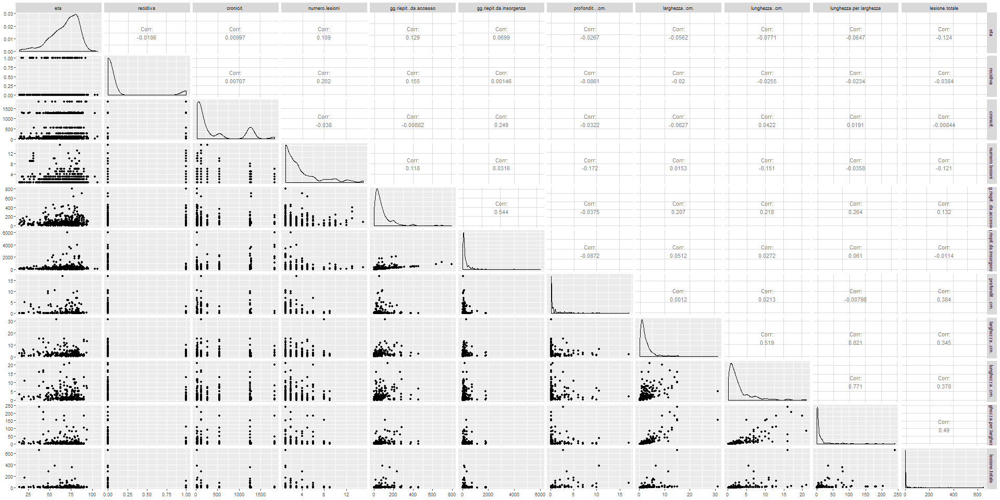
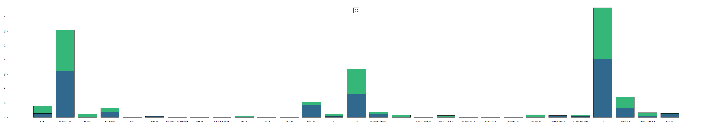
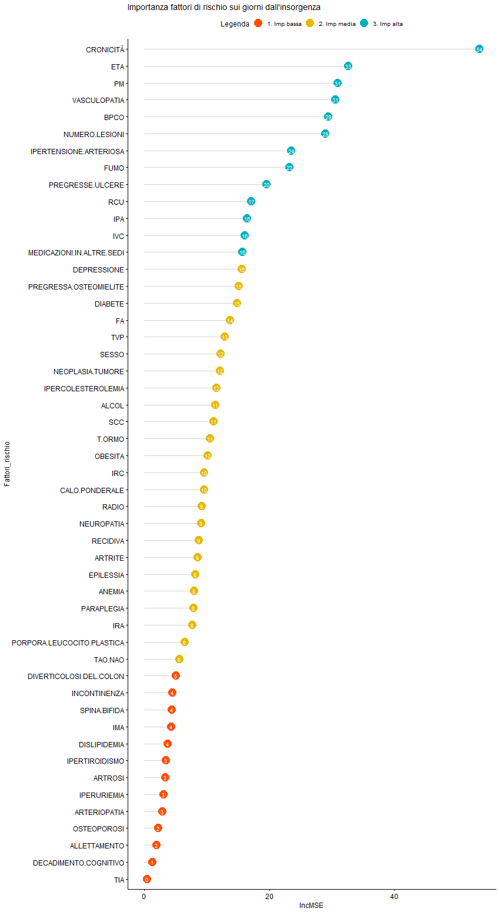
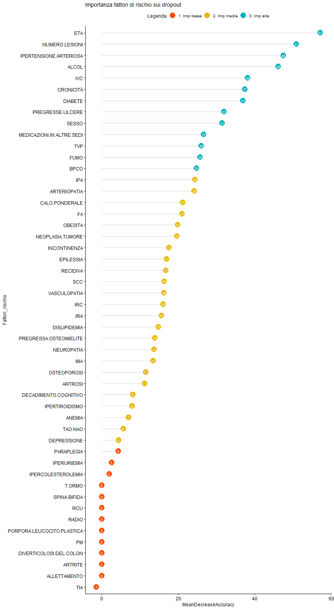
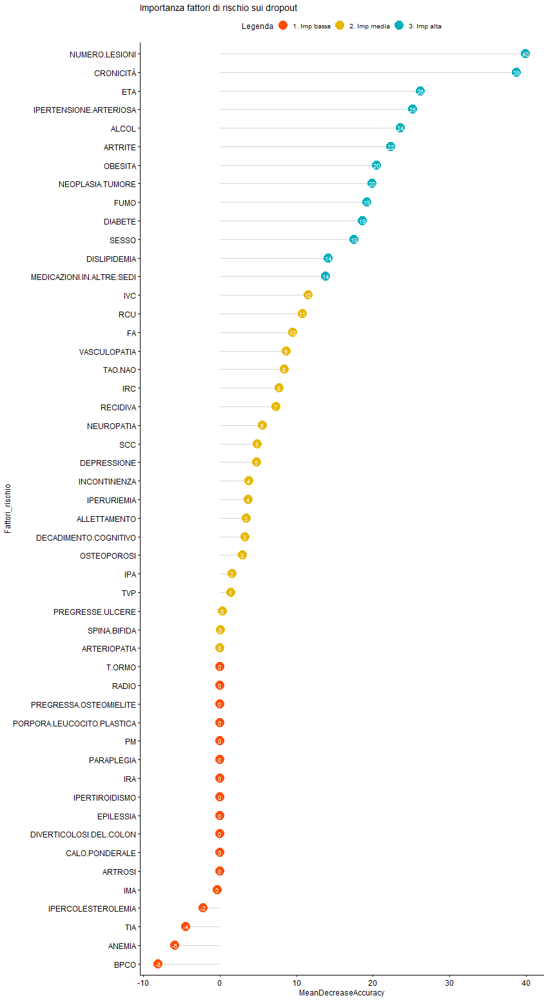
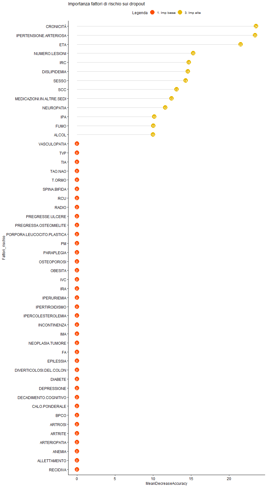

Analisi
descrittiva
In questa parte dello studio presentiamo e descriviamo i dati attraverso grafici, grafici dinamici e tabelle.
I pazienti
I fattori di rischio
Le lesioni
1. I pazienti
| INFO | num | mediaeta | mineta | maxeta | vareta | f | m | cronicita | gg_da_accesso | gg_da_insorgenza | recidiva |
|---|---|---|---|---|---|---|---|---|---|---|---|
| 2011 | 3 | 74 | 74 | 74 | 0 | 3 | 0 | 790.33 | 1150 | 0 | |
| 2012 | 1 | 45 | 45 | 45 | 0 | 1 | 1825 | 1 | |||
| 2013 | 52 | 68.25 | 35 | 88 | 170.46 | 37 | 15 | 422 | 163.74 | 617.91 | 0 |
| 2014 | 178 | 65.62 | 24 | 106 | 204.13 | 77 | 101 | 317.98 | 77.61 | 351.96 | 0.02 |
| 2015 | 213 | 69.38 | 17 | 95 | 169.77 | 127 | 86 | 393.59 | 119.97 | 361.78 | 0.13 |
| 2016 | 222 | 66.69 | 16 | 94 | 315.78 | 106 | 116 | 307.24 | 87.98 | 216.77 | 0.16 |
| 2017 | 279 | 66.98 | 17 | 95 | 316.32 | 142 | 137 | 372.83 | 79.93 | 155.11 | 0.1 |
| 2018 | 254 | 69.15 | 15 | 94 | 267.07 | 122 | 132 | 445.48 | 66.3 | 181.11 | 0.08 |
| 2019 | 1 | 64 | 64 | 64 | 1 | 0 | 22 | 33 | 63 | 0 | |
| TOTALE | 1203 | 67.66 | 15 | 106 | 257.1 | 615 | 588 | 375.7 | 88.88 | 272.31 | 0.1 |

La variabile di risposta e il caso specifico della profondità
Nel nostro studio abbiamo due varibili target che sono i giorni di guarigione dalla data di accesso e di giorni di guarigione dalla data di insorgenza della lesione. Queste due varibili sono state create calcolando i giorni dalla data di accesso o di insorgenza (che il paziente ha fornito) fino alla data di riepitelizzazione.
Le correlazioni tra i giorni di guarigione sia di accesso sia di guariogione hanno tutte lo stesso segno il che implica che le variazioni di giorni vengono influenzate in modo simile tra i diversi regressori.
Le uniche due variabili che non hanno lo stesso segno sono la cronicità, la profondità e la lesione totale.
Per quanto riguarda la prima ha senso che nei giorni di accesso abbia una correlazione prossima allo zero e che nei giorni di insorgenza abbia una influenza positiva in quanto la cronicità corrisponde a quanto tempo un paziente ha aspettato prima di farsi curare, quindi naturalmente fa aumentare i giorni di guarigione da quando è sorta ma (almeno in linea generale) la recidività non fa aumentare i giorni necessari per essere guarità post intervento.
Per quanto riguarda, invece, la profondità notiamo che ha una correlazione negativa con i giorni di guarigione questo significherebbe che all'aumentare della profondità della ferita il paziente guarisce in meno tempo. Questo ovviamente risulta essere inlogico e può essere causato principalmente da due ragioni: la prima può corrispondere ad una relazione inversa tra la profondità e larghezza/lunghezza, ossia più la larghezza/lunghezza aumenta più la profondità sarà minore, ma dalla matrice di correlazione non giungiamo a queste conclusioni quindi siamo costretti a scartare questa prima conlcusione.
Un altra possibilità è che non essendoci mezzi adueguati per misurare la profondità di una ferita essa sia stata presa in maniera approssimativa e questo ha portato ad una distorsione della misura.
Osservando i dati ci sembra più plausibile la seconda possibilità questo ci porta ad escludere questa variabile dalla nostra analisi e anche la variabile lesione.totale verrà esclusa in quanto ha al suo interno la profondità.
2. Fattori di rischio
| Fattori di rischio | Num | % droupout | GG di guarigione da accesso |
GG di guarigione da insorgenza |
% recidiva |
|---|---|---|---|---|---|
| ALCOL | 317 | 0.24 | 104.45 | 237.09 | 0.21 |
| ALLETTAMENTO | 11 | 0.63 | 152.25 | 181.25 | 0 |
| ANEMIA | 77 | 0.28 | 151.9 | 425.96 | 0.2 |
| ARTERIOPATIA | 50 | 0.26 | 99.94 | 247.64 | 0.14 |
| ARTRITE | 16 | 0.18 | 332.84 | 441.07 | 0.81 |
| ARTROSI | 24 | 0 | 214.82 | 286.43 | 0.54 |
| BPCO | 75 | 0.24 | 125.68 | 629.54 | 0.2 |
| CALO.PONDERALE | 18 | 0.16 | 85 | 279.33 | 0 |
| DECADIMENTO.COGNITIVO | 17 | 0.23 | 91.07 | 124.53 | 0.05 |
| DEPRESSIONE | 10 | 0.1 | 225.22 | 333.8 | 0 |
| DIABETE | 308 | 0.28 | 88.03 | 242.81 | 0.13 |
| DISLIPIDEMIA | 57 | 0.21 | 73 | 127.15 | 0.1 |
| DIVERTICOLOSI.DEL.COLON | 10 | 0 | 4 | 22 | 0 |
| EPILESSIA | 12 | 0 | 51.5 | 384.08 | 0.08 |
| FA | 48 | 0.08 | 91.77 | 295.63 | 0.14 |
| FUMO | 405 | 0.32 | 78.17 | 227.38 | 0.12 |
| NEOPLASIA.TUMORE | 131 | 0.21 | 141.54 | 222.8 | 0.15 |
| IMA | 31 | 0.29 | 45.9 | 121 | 0.25 |
| INCONTINENZA | 10 | 0 | 35.7 | 159.3 | 0 |
| IPA | 83 | 0.28 | 74.1 | 327.47 | 0 |
| IPERCOLESTEROLEMIA | 19 | 0.15 | 68.62 | 562.25 | 0.05 |
| IPERTENSIONE.ARTERIOSA | 412 | 0.25 | 93.26 | 219.52 | 0.17 |
| IPERTIROIDISMO | 12 | 0 | 118 | 120 | 0 |
| IPERURIEMIA | 12 | 0 | 24.91 | 61.08 | 0 |
| IRA | 14 | 0.5 | 68.57 | 160.57 | 0.07 |
| IRC | 139 | 0.3 | 72.82 | 251.98 | 0.1 |
| IVC | 156 | 0.33 | 61.49 | 332.87 | 0.16 |
| NEUROPATIA | 12 | 0.08 | 129.36 | 414 | 0 |
| OBESITA | 121 | 0.28 | 80.2 | 266.61 | 0.13 |
| OSTEOPOROSI | 30 | 0.36 | 96.26 | 308.84 | 0 |
| PARAPLEGIA | 15 | 0.66 | 215.4 | 364.16 | 0.13 |
| PM | 10 | 0.5 | 238 | 843.75 | 0 |
| PORPORA.LEUCOCITO.PLASTICA | 12 | 0 | 70 | 120 | 0 |
| PREGRESSA.OSTEOMIELITE | 11 | 0.36 | 182.57 | 654 | 0.27 |
| PREGRESSE.ULCERE | 33 | 0.48 | 45.41 | 334.46 | 0.21 |
| RADIO | 13 | 0 | 332.84 | 441.07 | 1 |
| RCU | 10 | 0 | 136.69 | 384.33 | 0 |
| SCC | 72 | 0.43 | 62.26 | 220.76 | 0.11 |
| SPINA.BIFIDA | 15 | 0.26 | 43.72 | 102.16 | 0.73 |
| T.ORMO | 13 | 0 | 332.84 | 441.07 | 1 |
| TAO.NAO | 28 | 0.21 | 75.5 | 153.68 | 0 |
| TIA | 11 | 0.27 | 145.62 | 176.87 | 0.18 |
| TVP | 44 | 0.5 | 76.95 | 355.03 | 0.06 |
| VASCULOPATIA | 47 | 0.1 | 116.9 | 402.04 | 0.25 |
| Fattori di rischio | Età | Cronicità | Profondità | Lunghezza | Larghezza |
|---|---|---|---|---|---|
| ALCOL | IC: 66,36 - 70,12 | IC: 316,17 - 424,11 | IC: 0,47 - 1,16 | IC: 2,1 - 3,17 | IC: 2,16 - 3,66 |
| ALLETTAMENTO | IC: 69 - 82,36 | IC: 51,09 - 452,13 | IC: 0,1 - 4 | IC: 0,5 - 10 | IC: 1,5 - 15 |
| ANEMIA | IC: 68,2 - 74,18 | IC: 249,26 - 479,96 | IC: 0,25 - 1,33 | IC: 1,71 - 3,89 | IC: 1,72 - 2,99 |
| ARTERIOPATIA | IC: 73,58 - 78,95 | IC: 156,9 - 321,81 | IC: 0,304 - 0,696 | IC: 5,804 - 6,196 | IC: 9,804 - 10,196 |
| ARTRITE | IC: 74,87 - 82 | IC: 83,87 - 121 | No info | No info | No info |
| ARTROSI | IC: 80,41 - 84,99 | IC: 88,95 - 117,83 | No info | IC: 0,87 - 2 | IC: 1,25 - 3,62 |
| BPCO | IC: 75,64 - 79,45 | IC: 384,96 - 655,59 | IC: 0,26 - 0,68 | IC: 1,68 - 3,29 | IC: 1,7 - 2,97 |
| CALO,PONDERALE | IC: 62 - 63,66 | IC: 206 - 265,5 | No info | No info | No info |
| DECADIMENTO,COGNITIVO | IC: 81,17 - 89,11 | IC: 49 - 307,66 | IC: 2 - 3 | IC: 1,5 - 7,5 | IC: 0,9 - 1,49 |
| DEPRESSIONE | IC: 57,6 - 75,99 | IC: 72,4 - 223,6 | No info | IC: 0,5 - 6,5 | IC: 2,304 - 2,696 |
| DIABETE | IC: 70,36 - 72,95 | IC: 351,69 - 463,3 | IC: 0,53 - 1,56 | IC: 2,5 - 3,82 | IC: 2,23 - 3,82 |
| DISLIPIDEMIA | IC: 69,07 - 73,45 | IC: 332,53 - 627,5 | IC: 0,77 - 4,09 | IC: 1,2 - 4,47 | IC: 1,38 - 5,59 |
| DIVERTICOLOSI,DEL,COLON | IC: 69,08 - 76,92 | IC: 18,08 - 25,92 | No info | No info | No info |
| EPILESSIA | IC: 51 - 55 | IC: 285,83 - 511,5 | No info | No info | No info |
| FA | IC: 74,93 - 80,1 | IC: 118,25 - 336,38 | IC: 0,22 - 4,04 | IC: 0,66 - 2,58 | IC: 0,87 - 3,02 |
| FUMO | IC: 63,48 - 66,41 | IC: 290,67 - 376,23 | IC: 0,59 - 1,51 | IC: 2,26 - 3,59 | IC: 2,21 - 3,81 |
| NEOPLASIA,TUMORE | IC: 70,38 - 74,05 | IC: 404,8 - 600,05 | IC: 0,76 - 2,36 | IC: 1,79 - 3,32 | IC: 1,69 - 2,6 |
| IMA | IC: 68,74 - 76,03 | IC: 496,61 - 925,6 | IC: 0,2 - 3,42 | IC: 0,5 - 3,87 | IC: 0,35 - 0,85 |
| INCONTINENZA | IC: 69,59 - 80,4 | IC: 47,2 - 948,7 | IC: 0,17 - 1,37 | IC: 1,04 - 3,34 | IC: 0,93 - 2,24 |
| IPA | IC: 68,2 - 71,81 | IC: 292,14 - 474,24 | IC: 0,79 - 3,54 | IC: 1,7 - 4,81 | IC: 1,5 - 4,6 |
| IPERCOLESTEROLEMIA | IC: 69,53 - 78,26 | IC: 860,29 - 1359,57 | IC: 0,12 - 1,11 | IC: 1,79 - 5,41 | IC: 1,55 - 2,83 |
| IPERTENSIONE,ARTERIOSA | IC: 73,31 - 75,39 | IC: 276,5 - 365,84 | IC: 0,71 - 1,53 | IC: 2,17 - 3,23 | IC: 2,06 - 2,9 |
| IPERTIROIDISMO | IC: 81,08 - 88,92 | IC: 117,08 - 124,92 | No info | No info | No info |
| IPERURIEMIA | IC: 73,91 - 80,91 | IC: 121 - 405,75 | IC: 0,19 - 0,52 | IC: 1,04 - 1,99 | IC: 1,26 - 2,79 |
| IRA | IC: 41,28 - 62,42 | IC: 28,57 - 149,28 | No info | No info | No info |
| IRC | IC: 72,99 - 76,74 | IC: 259,01 - 415,8 | IC: 0,42 - 1,07 | IC: 1,8 - 2,93 | IC: 1,75 - 2,65 |
| IVC | IC: 68,9 - 73,51 | IC: 299,83 - 453,6 | IC: 0,15 - 0,31 | IC: 2,44 - 4,13 | IC: 2,09 - 3,59 |
| NEUROPATIA | IC: 61,08 - 64,33 | IC: 290,25 - 742,83 | IC: 0,3 - 0,88 | IC: 1,5 - 6,35 | IC: 1,5 - 4,81 |
| OBESITA | IC: 63,76 - 68,67 | IC: 457,72 - 666,55 | IC: 0,55 - 1,46 | IC: 2,32 - 3,76 | IC: 2,04 - 3,61 |
| OSTEOPOROSI | IC: 71,59 - 76,63 | IC: 283,87 - 691,32 | IC: 0,1 - 0,87 | IC: 0,84 - 3,93 | IC: 1,09 - 2,36 |
| PARAPLEGIA | IC: 38,53 - 51,86 | IC: 360,17 - 1061,23 | IC: 3,804 - 4,196 | IC: 0,104 - 0,496 | IC: 0,804 - 1,196 |
| PM | IC: 64,4 - 75,2 | IC: 206,2 - 736,45 | No info | No info | No info |
| PORPORA,LEUCOCITO,PLASTICA | IC: 68,08 - 75,92 | IC: 117,08 - 124,92 | No info | No info | No info |
| PREGRESSA,OSTEOMIELITE | IC: 61,63 - 65,27 | IC: 339,54 - 547 | IC: 0,46 - 1 | IC: 1,41 - 6,66 | IC: 1,33 - 5,08 |
| PREGRESSE,ULCERE | IC: 63,87 - 71,9 | IC: 61,71 - 270,8 | IC: 0,11 - 1,38 | IC: 2,52 - 6,45 | IC: 2,41 - 4,55 |
| RADIO | IC: 78,08 - 85,92 | IC: 117,08 - 124,92 | No info | No info | No info |
| RCU | IC: 55,2 - 68,69 | IC: 391,4 - 1073,71 | No info | No info | No info |
| SCC | IC: 75,31 - 79,8 | IC: 191,99 - 339,5 | IC: 0,17 - 0,75 | IC: 2,19 - 4,4 | IC: 1,88 - 3,67 |
| SPINA,BIFIDA | IC: 29,4 - 35,06 | IC: 41,93 - 463,07 | No info | No info | No info |
| T,ORMO | IC: 78,08 - 85,92 | IC: 117,08 - 124,92 | No info | No info | No info |
| TAO,NAO | IC: 73,89 - 81,67 | IC: 65,29 - 222,15 | No info | IC: 2 - 8,25 | IC: 1,87 - 6,67 |
| TIA | IC: 67,72 - 80,36 | IC: 139,68 - 912,27 | IC: 0 - 0,296 | IC: 0,804 - 1,196 | IC: 3,804 - 4,196 |
| TVP | IC: 64,82 - 71,47 | IC: 267,06 - 653,79 | IC: 0,2 - 3,26 | IC: 2,04 - 5,91 | IC: 1,9 - 4,36 |
| VASCULOPATIA | IC: 76,95 - 80,53 | IC: 142,64 - 379,3 | IC: 0,12 - 0,84 | IC: 0,42 - 1,44 | IC: 0,5 - 2,42 |
3. Lesioni
Classificazione lesione
| Classificazione | Num | % droupout | GG di guarigione da accesso |
GG di guarigione da insorgenza |
% recidiva |
|---|---|---|---|---|---|
| ALTRO | 41 | 0.51 | 81.15 | 542.21 | 0.07 |
| ARTI INFERIORI | 306 | 0.33 | 97.68 | 392.38 | 0.13 |
| ASCESSO | 11 | 0.18 | 76.66 | 113.22 | 0.09 |
| AUTOIMMUNE | 34 | 0.23 | 175.34 | 311.6 | 0.41 |
| CISTI | 3 | 0.33 | 142 | 229 | 0 |
| DIASTASI | 4 | 0.75 | 128 | 184 | 0 |
| DISCHERATOSI/SCLERODER | 1 | 0 | 54 | 548 | 1 |
| EMATOMA | 2 | 0.5 | 47 | 63 | 0 |
| ESITO CICATRIZIALE | 3 | 0 | 162.66 | 188.33 | 0 |
| FASCITE | 5 | 0.2 | 105.25 | 127.75 | 0 |
| FISTOLA | 3 | 0.66 | 89 | 200 | 0.66 |
| FLITTENA | 2 | 0 | 26 | 94.5 | 0 |
| INFEZIONE | 53 | 0.32 | 83.13 | 301.67 | 0.2 |
| IVC | 11 | 0.45 | 99 | 143.5 | 0.45 |
| LDP | 170 | 0.51 | 106.23 | 321.96 | 0.05 |
| LESIONE DA PRESIDIO | 20 | 0.3 | 57.57 | 91.31 | 0 |
| LESIONI MULTIPLE IN PZ CON MULTI COMORBILITÀ E RECENTE RICOVERO PER GANGRENA DI FOURNIER | 8 | 1 | 0 | ||
| MORBO DI BUERGER | 3 | 0 | 80 | 263 | 0 |
| MULTIFATTORIALE | 7 | 0.85 | 25 | 103 | 0.14 |
| NECROSI SECCA | 2 | 1 | 0 | ||
| NEOPLASTICA | 2 | 1 | 0 | ||
| OPENWINDOW | 3 | 1 | 0 | ||
| OSTEOMIELITE | 10 | 0.9 | 15 | 1062 | 0.1 |
| SCLERODERMICA | 7 | 0.28 | 238 | 630.85 | 0 |
| SISTEMICA (EDEMA) | 8 | 0 | 135.5 | 151 | 0 |
| SSI | 383 | 0.32 | 70.38 | 128.27 | 0.03 |
| TRAUMATICA | 70 | 0.12 | 74.81 | 236.42 | 0.25 |
| ULCERA DIABETICA | 17 | 0.7 | 67.2 | 167.4 | 0 |
| USTIONE | 14 | 0.35 | 86.88 | 133.42 | 0 |
| Classificazione | Età | Cronicità | Profondità | Lunghezza | Larghezza |
|---|---|---|---|---|---|
| ALTRO | IC: 59,97 - 69,14 | IC: 281,8 - 624,54 | IC: 0,2 - 0,5 | IC: 0,5 - 1 | IC: 1 - 1,5 |
| ARTI INFERIORI | IC: 71,31 - 74,62 | IC: 299,4 - 400 | IC: 0,25 - 0,67 | IC: 2,36 - 3,75 | IC: 2,18 - 3,65 |
| ASCESSO | IC: 55,18 - 76,54 | IC: 94,58 - 731,27 | IC: 0,2 - 3,75 | IC: 1,2 - 7,87 | IC: 1,14 - 2,27 |
| AUTOIMMUNE | IC: 72,29 - 77,79 | IC: 103,29 - 383,32 | No info | No info | No info |
| CISTI | IC: 18 - 23,99 | IC: 18,08 - 25,92 | No info | No info | No info |
| DIASTASI | IC: 70,25 - 71 | IC: 405,75 - 1260 | IC: 0,3 - 4,62 | IC: 1,25 - 6,75 | IC: 1 - 8,87 |
| DISCHERATOSI/SCLERODER | IC: 73,08 - 80,92 | IC: 543,08 - 550,92 | No info | No info | No info |
| EMATOMA | IC: 60 - 90 | IC: 45 - 121 | No info | No info | No info |
| ESITO CICATRIZIALE | IC: 20 - 83 | IC: 45 - 1260 | IC: 0 - 0,296 | IC: 1,804 - 2,196 | IC: 0,304 - 0,696 |
| FASCITE | IC: 39 - 49,2 | IC: 22 - 764,8 | No info | No info | No info |
| FISTOLA | IC: 27 - 77 | IC: 121 - 1277 | IC: 1,804 - 2,196 | IC: 1,004 - 1,396 | IC: 1,204 - 1,596 |
| FLITTENA | IC: 81 - 82 | IC: 117,08 - 124,92 | No info | IC: 1 - 2,5 | IC: 1 - 4,5 |
| INFEZIONE | IC: 58,2 - 67,62 | IC: 283,36 - 668,02 | IC: 0,1 - 0,35 | IC: 1,29 - 5,02 | IC: 1,27 - 3,23 |
| IVC | IC: 66 - 85,45 | IC: 132,09 - 410,09 | IC: 0,1 - 0,35 | IC: 1,12 - 6,89 | IC: 1,31 - 8,96 |
| LDP | IC: 66,64 - 71,25 | IC: 252,46 - 393,01 | IC: 0,31 - 0,99 | IC: 1,49 - 2,72 | IC: 1,57 - 3,25 |
| LESIONE DA PRESIDIO | IC: 52,25 - 65,14 | IC: 260,72 - 807,02 | IC: 0,12 - 1,28 | IC: 2,97 - 12,44 | IC: 2,71 - 11,54 |
| LESIONI MULTIPLE IN PZ CON MULTI COMORBILITÀ E RECENTE RICOVERO PER GANGRENA DI FOURNIER | IC: 78,08 - 85,92 | IC: 1256,08 - 1263,92 | No info | No info | No info |
| MORBO DI BUERGER | IC: 57,08 - 64,92 | IC: 270,08 - 277,92 | No info | No info | No info |
| MULTIFATTORIALE | IC: 79,14 - 82,42 | IC: 175,85 - 274 | No info | No info | No info |
| NECROSI SECCA | IC: 49,08 - 56,92 | IC: 117,08 - 124,92 | IC: 0 - 0,296 | IC: 2,304 - 2,696 | IC: 3,604 - 3,996 |
| NEOPLASTICA | IC: 72 - 83 | IC: 274 - 1277 | No info | No info | No info |
| OPENWINDOW | IC: 58 - 71 | IC: 22 - 1277 | IC: 0 - 0,296 | IC: 4,804 - 5,196 | IC: 7,804 - 8,196 |
| OSTEOMIELITE | IC: 69 - 82,3 | IC: 239,85 - 661 | IC: 0,1 - 1,24 | IC: 1,4 - 4,99 | IC: 1,7 - 6,06 |
| SCLERODERMICA | IC: 49,85 - 62 | IC: 78,57 - 609,14 | No info | No info | No info |
| SISTEMICA (EDEMA) | IC: 62 - 80 | IC: 18,08 - 25,92 | No info | No info | No info |
| SSI | IC: 62,15 - 65,41 | IC: 333,76 - 446,46 | IC: 1,01 - 2,15 | IC: 2,14 - 3,51 | IC: 1,74 - 2,53 |
| TRAUMATICA | IC: 61,71 - 71,29 | IC: 302,05 - 575,4 | IC: 0,22 - 1,05 | IC: 1,98 - 7,9 | IC: 1,09 - 2,67 |
| ULCERA DIABETICA | IC: 65,29 - 73,47 | IC: 155,41 - 479,86 | IC: 0,1 - 0,3 | IC: 1,08 - 3,33 | IC: 1,13 - 16,58 |
| USTIONE | IC: 50,14 - 70,57 | IC: 59,04 - 570 | IC: 0,004 - 0,396 | IC: 0,804 - 1,196 | IC: 2,304 - 2,696 |


Sede della lesione
| Sede lesioni | Num | % droupout | GG di guarigione da accesso |
GG di guarigione da insorgenza |
% recidiva |
|---|---|---|---|---|---|
| ADDOME | 104 | 0.33 | 65.78 | 115.25 | 0 |
| BRACCIO | 18 | 0.38 | 63.09 | 120.08 | 0 |
| COLONNA VERTEBRALE | 12 | 0.5 | 51.5 | 143.5 | 0.25 |
| GAMBA | 768 | 0.35 | 87.26 | 297.62 | 0.1 |
| MANO | 37 | 0.43 | 67.71 | 522.74 | 0.13 |
| PIEDE | 142 | 0.3 | 132.06 | 280.49 | 0.17 |
| ZONA FACCIALE | 20 | 0.5 | 70.7 | 119.2 | 0.15 |
| ZONA PUBICA | 34 | 0.52 | 55.56 | 151.11 | 0.02 |
| ZONA RETTALE | 39 | 0.41 | 111.78 | 180.07 | 0.02 |
| ZONA TORACICA | 29 | 0.44 | 42.31 | 90.88 | 0.03 |
| Sede lesione | Età | Cronicità | Profondità | Lunghezza | Larghezza |
|---|---|---|---|---|---|
| ADDOME | IC: 60,87 - 65,62 | IC: 426,02 - 638,3 | IC: 1,1 - 3,25 | IC: 1,66 - 4,79 | IC: 1,29 - 3,2 |
| BRACCIO | IC: 61,39 - 75,77 | IC: 250,86 - 796,25 | IC: 0,12 - 4,58 | IC: 2,31 - 6,78 | IC: 1,71 - 4,06 |
| COLONNA VERTEBRALE | IC: 52,83 - 65,58 | IC: 178,06 - 951,64 | IC: 0,1 - 4,5 | IC: 0,5 - 3,5 | IC: 0,5 - 0,7 |
| GAMBA | IC: 68,8 - 70,84 | IC: 314,68 - 384,99 | IC: 0,43 - 0,97 | IC: 2,47 - 3,52 | IC: 2,24 - 3,07 |
| MANO | IC: 61,46 - 70,86 | IC: 355,7 - 725,4 | IC: 0,1 - 0,13 | IC: 1,16 - 6,29 | IC: 1,43 - 8,14 |
| PIEDE | IC: 63,56 - 69,59 | IC: 210,23 - 338,24 | IC: 0,15 - 0,28 | IC: 1,63 - 3,48 | IC: 1,7 - 5,01 |
| ZONA FACCIALE | IC: 51,8 - 69,49 | IC: 249,51 - 653,04 | IC: 0,1 - 2,04 | IC: 0,33 - 3,2 | IC: 0,6 - 5 |
| ZONA PUBICA | IC: 56,91 - 67,79 | IC: 472,26 - 934,99 | IC: 0,53 - 2,52 | IC: 0,98 - 3,73 | IC: 1,03 - 5,31 |
| ZONA RETTALE | IC: 42,38 - 57,4 | IC: 181,57 - 497,9 | IC: 0,6 - 3,64 | IC: 1,83 - 6,02 | IC: 1,85 - 5,96 |
| ZONA TORACICA | IC: 66,96 - 73,93 | IC: 161,55 - 456,81 | IC: 0,56 - 4,89 | IC: 0,8 - 2,74 | IC: 0,88 - 2,03 |
Fattori di
rischio
In questa parte dell'analisi abbiamo analizzato i dati per valutare quali fattori di rischio (senza differenziare per patologia) influenzassero maggiormente i tempi di guarigione e quali, invece, le ragioni della non guarigione.
Analisi "importance" fattori di rischio su giorni
Analisi "importance" fattori di rischio su dropout
1. Analisi "importance" fattori di rischio su giorni
Giorni di guarigione da accesso
Giorni di guarigione da insorgenza

2. Analisi "importance" fattori di rischio su dropout

Confronto tra classificazione
In questa parte dell'analisi abbiamo analizzato i dati per valutare differiti per quatro diverse categorie di diagnosi:
a. Arti inferiori
b. LDP
c. SSI
d. Ulcere diabetiche
Introduzione
Analisi fattori di rischio per ogni classificazione
1. Introduzione
Per farci un idea di come le 4 diverse classificazione scelte influenzino i giorni di guarigione abbiamo fatto inizialmente una regressione che ha come unico scopo quello di orientarsi tra i dati, e trarre delle conclusioni di carattere descrittivo.
Per fare questa regressione abbiamo tenuto dei dati solo le 4 classificazione di interesse:
| Classificazione | Num | % droupout | GG di guarigione da accesso |
GG di guarigione da insorgenza |
% recidiva |
|---|---|---|---|---|---|
| ARTI INFERIORI | 306 | 0.33 | 97.68 | 392.38 | 0.13 |
| LDP | 170 | 0.51 | 106.23 | 321.96 | 0.05 |
| SSI | 383 | 0.32 | 70.38 | 128.27 | 0.03 |
| ULCERA DIABETICA | 17 | 0.7 | 67.2 | 167.4 | 0 |
Una volta ottenuto questo subset volevamo vedere se c'era una significativa differenza tra i giorni di guarigione nelle diverse classificazioni allora abbiamo deciso di trasformare la variabile classificazione in una dummy e costruire una regressione per valutare se i coefficienti avessere una differenza significativita da zero.
Call:
lm(formula = gg.riepit..da.accesso ~ eta + classificazione, data = ds)
Residuals:
Min 1Q Median 3Q Max
-110.62 -55.91 -25.88 13.93 698.01
Coefficients:
Estimate Std. Error t value Pr(>|t|)
(Intercept) 56.0967 23.8850 2.349 0.0192 *
eta 0.5644 0.3080 1.833 0.0674 .
classificazioneLDP 11.2943 13.9811 0.808 0.4195
classificazioneSSI -22.2643 10.3218 -2.157 0.0314 *
classificazioneULCERA DIABETICA -21.8579 48.3206 -0.452 0.6512
---
Signif. codes: 0 ‘***’ 0.001 ‘**’ 0.01 ‘*’ 0.05 ‘.’ 0.1 ‘ ’ 1
Residual standard error: 106.2 on 545 degrees of freedom
(326 observations deleted due to missingness)
Multiple R-squared: 0.02602, Adjusted R-squared: 0.01887
F-statistic: 3.64 on 4 and 545 DF, p-value: 0.00614
Come possiamo notare dal R-squared in questa regressione mancano molti regressori che possano spiegare in modo più accurato le ragioni di variazioni di giorni di guarigione, ma solo a livello generale questa regressione ci dice che c'è differenza tra le varie classificazione.
N.B. In questa parte non abbiamo indagato le ragioni della differenza tra le 4 classificazioni ma solo valutato che esiste una differenza.
2. Analisi Fattori di rischio per ogni classificazione
a. Analisi "importance" fattori di rischio su giorni
Arti inferiori
Giorni di guarigione da accesso
Giorni di guarigione da insorgenza
LDP
Giorni di guarigione da accesso
Giorni di guarigione da insorgenza
SSI
Giorni di guarigione da accesso
Giorni di guarigione da insorgenza
Ulcere diabetica
Giorni di guarigione da accesso
Giorni di guarigione da insorgenza
b. Analisi "importance" fattori di rischio su dropout
Arti inferiori

LDP
SSI

Ulcere diabetica

Conclusioni
Teoria piu conclusioni principali